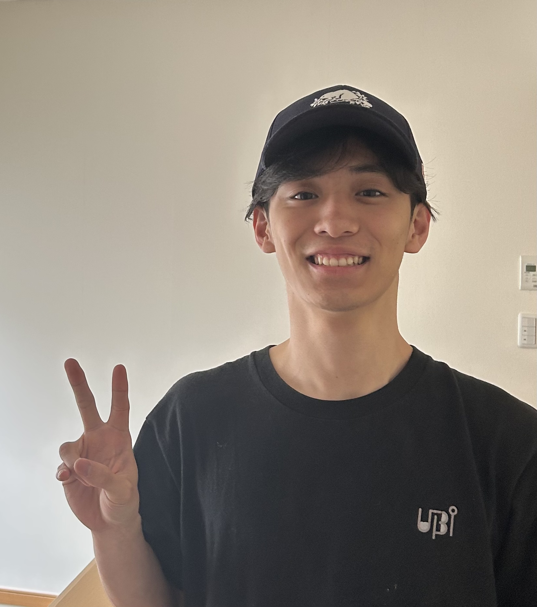

Computer Science · Keio University
I am an undergraduate researcher at Keio University SFC, in the Nakazawa and Okoshi lab, advised by Tadashi Okoshi and Jin Nakazawa. I work toward making high-quality mental health support accessible regardless of financial, geographic, or social barriers, by building AI that can detect when support is needed and deliver it privately and effectively. My current work spans federated fine-tuning of counseling LLMs, automatic detection of interoception from LLM interaction, and multimodal psychological-state estimation for just-in-time adaptive intervention.
Before Keio, I graduated from UWCSEA East (class of 2023).

Mental Health Counseling LLMs in Mixed IID/Non-IID Federations
Workshop Proceedings of the ACM International Joint Conference on Pervasive and Ubiquitous Computing (UbiComp 2026), Shanghai. To appear
Fine-tuning LLM for Counseling Application in Federated Learning Setting
Adjunct Proceedings of the ACM International Joint Conference on Pervasive and Ubiquitous Computing (UbiComp/ISWC 2025), Espoo. Poster
FLECS: Fine-tuning of LLM for Counseling Application Using Federated Learning
IPSJ Ubiquitous Computing Systems (UBI) Workshop, Osaka, 2025. Poster, in Japanese